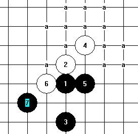

瑞星必败5
首页
茗弈阁
#1 瑞星必败5 作者：英雄九段 发表时间：2009-6-7 14:47:58
今天下午观看
【茗弈】孟洁VS【茗弈】日月之合
对弈时，看到【茗弈】孟洁下出了这样的一个瑞星黑5，我认为是必败的
=======上图对应的爱五子棋谱代码如下，以便你拆解：========
h8h9h6i10i8
======================================================下面我就对这个败5发表个人意见
=======上图对应的爱五子棋谱代码如下，以便你拆解：========
h8h9h6i10i8g8f7
======================================================这个白6走后黑7走法是唯一的
=======上图对应的爱五子棋谱代码如下，以便你拆解：========
h8h9h6i10i8g8f7h11
======================================================白8之后黑棋已经没有办法了只能后悔默默流泪道：“苍天啊，怎么就这样决杀我了呢！”
［ 茗弈小刀 于 2009-6-7 14:59:28 时花20金币送鲜花一朵］
#2 Re:瑞星必败5 作者：英雄九段 发表时间：2009-6-7 14:49:32
我希望有能做地毯谱的同志,做一下这个瑞星败5,然后拿出来分享!
#3 Re:瑞星必败5 作者：茗弈小刀 发表时间：2009-6-7 14:59:15
这个败5的谱我可以给你，但传不来。号上给你吧。
#4 Re:瑞星必败5 作者：爱五子棋迷 发表时间：2009-6-7 15:03:13
h8h9h6i10i8g8f7h11
#5 Re:瑞星必败5 作者：自来水 发表时间：2009-6-7 16:39:57
这个五太弱了……LZ那个7也很弱，给个图你们自己看吧
放眼望去，一堆必胜点……

#6 Re:瑞星必败5 作者：岳麓小棋后 发表时间：2009-6-7 16:49:37
其实主要是在后面的较量中，这个下的5手成为一颗废子，五子棋讲究全盘子力的联合，这个5在后面不算防，想以攻制攻，也不算攻，和黑子的联系进攻也不好，从而就废了。。。
［ 茗弈小刀 于 2009-6-7 17:25:28 时花20金币送鲜花一朵］
#7 Re:瑞星必败5 作者：茗弈小刀 发表时间：2009-6-7 17:25:15
谢谢棋后的讲解，这样初学的朋友更清楚易懂了。
#8 Re:瑞星必败5 作者：自来水 发表时间：2009-6-7 17:56:57
...看来这个世道，讲解员比较有前途~~~
#9 Re:瑞星必败5 作者：安娜制作所 发表时间：2009-6-8 8:35:50
呵呵,是这样子的啦! 开局争二,守中争先哈! ,小棋后说的很好,非常通俗易懂!自来水说放眼望去一堆必胜点,好形象,好生动啊!
,小棋后说的很好,非常通俗易懂!自来水说放眼望去一堆必胜点,好形象,好生动啊!
#10 Re:瑞星必败5 作者：自来水 发表时间：2009-6-8 11:46:46
大鱼已经把瑞星前10手胜败地毯都发了……里面有LZ要的地毯
#11 Re:瑞星必败5 作者：日月之合 发表时间：2009-6-8 12:44:42
英雄啊!你真的很厉害啊!下次我们下好的你再做地毯好吗?